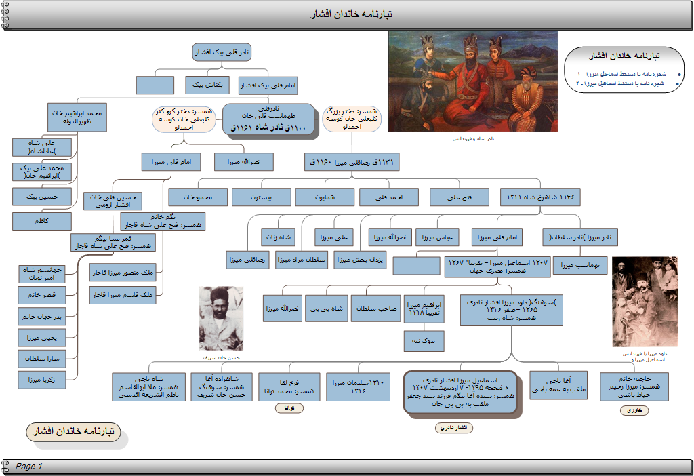

پیوندهای خانوادگی
تبارنامهٔ خاندان
تمام شاخههای ثبتشده در نمودار قدیمی، یکجا و قابل بزرگنمایی.
نمودارهای اصلی
۱۸ نمودار شجرهنامه،
در یک محل.
هر شاخه را انتخاب کنید؛ تصویر اصلی همانجا نمایش داده میشود. نمودارها از نسخهٔ قدیمی منتقل شدهاند و بدون مراجعه به دامنهٔ قبلی قابل مشاهدهاند.
نمودارها اسناد تصویری هستند و روابط جدیدی به آنها اضافه نشده است.

دربارهٔ دقت تاریخی
این تصاویر عین نمودارهای عمومی سایت اولیهاند؛ بازسازی اطلاعات و پیوندها نیازمند بررسی منابع است. اسناد اشخاص زنده نیز پیش از انتشار نهایی باید از نظر حریم خصوصی بازبینی شوند.